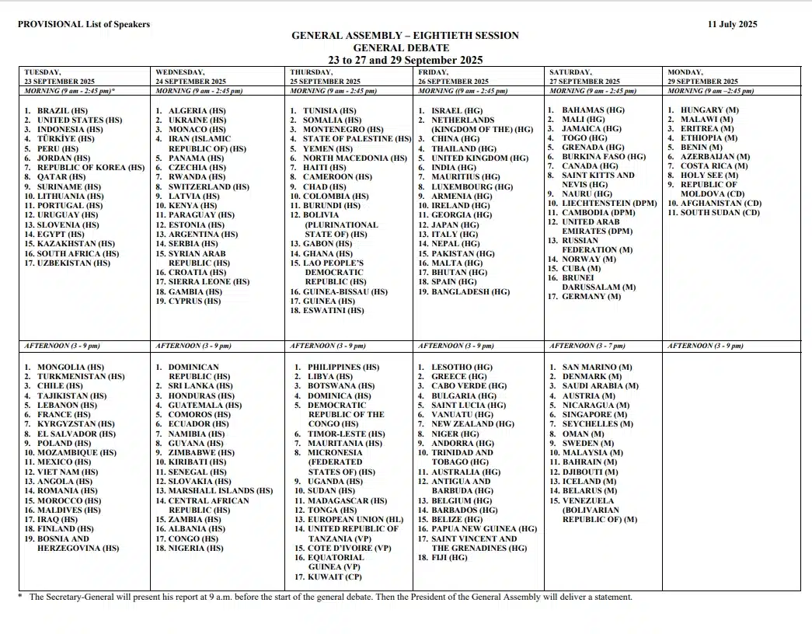

Wave of World Leaders Expected to arrive at JFK for UNGA #80
UNGA80 Expected arrivals
Published September 1, 2025 - Photo credit: Passblue
The start of UN Week activity at JFK has just begun! Here's some general info & tips you should know
From September 6 to the end of September, JFK is expected to have a unique variety of aircraft. This is because of the United Nations General Assembly, a global meeting for World Leaders, Presidents, Governments, VIPs, and celebrities who have ties to world leaders.
Peak activity begins on the 19th to the 28th. This is so that ranking individuals have time to prepare for the big meeting. At the start, cargo planes, such as C-17s and AN-12s, arrive to carry equipment, provide support, and prepare for VIPs. Generally, World leaders typically arrive during the 19th through the 23rd so they have at least some equipment (usually brought by military cargo charters and international air forces) before their arrival.
JFK gets a majority of the planes, such as tiltrotors, widebodies, narrowbodies, and other special planes. For example, one of my favorite arrivals has to be the V22s, C17s, and other military cargo planes. You never truly know what a cargo plane is carrying, especially one from another air force, but you can always make educated guesses based on the situation.
During UN Week, security at airports is tighter and more restricted. Planes such as the Boeing KC-135 Stratotanker, Lockheed Martin F-35 Lightning II, and other aircraft circle over the airport at times, usually when the President of the United States is arriving. This is to enhance security, surveillance, and safety protocols at airports in the New York City Metropolitan Area.
If you are spotting this UN Week, I'd reccomend Brookville Park, since it is very close to the runway, an amazing planespotting park with many different spotting variations based on location. I am most familiar with this park, so I know a LOT about it. I'd also recommend Bayswater State Park, Rockaway Boulevard, and Shirley Chisholm State Park.
UNGA80 VIP Flight Logs
September 24, 2025 - United nations General Assembly
| Time | Aircraft | Registration | Airline | Route | Runway | Notes |
|---|---|---|---|---|---|---|
| 8:49 AM EDT | Boeing 777-3SB(ER) | 80-1112 [JF001] | Japan Air Self Defense Force | IAD-JFK | Runway 22L | UN Week |
| 9:13 AM EDT | Boeing 787-8 Dreamliner | JA805A [ANA9402] | Al Nippon Airways - Delegation Flight Charter | IAD-JFK | Runway 22L | UN Week |
| 10:01 AM EDT | Airbus A310-304 | T.22-1 [AME4596] | Spanish Military Air Force - Ministry of Defense | SWF-JFK | Runway 22L | UN Week |
| 10:11 AM EDT | Boeing 777-313(ER) | PK-GIG [GIA1] | Garuda Indonesia - Presidential Flight | IAD-JFK | Runway 22L | UN Week |
| 10:22 AM EDT | Airbus A340-313(VVIP) | A7-AAH [A7AAH] | Qatar Amiri Flight | IAD-JFK | Runway 22L | UN Week |
| 10:27 AM EDT | Airbus A400M-180 Atlas | 17-0078 [TUAF157] | Türk Hava Kuvvetleri (Turkish Air Force) | DOV-JFK | Runway 22L | Rare + Military |
| 2:19 PM EDT | Gulfstream G550 | TC-ATA [TRK5] | Government of Turkiye | TEB-JFK | Runway 22L | UN Week |
| 2:55 PM EDT | Airbus VC-1A | FAB2101 [BRS2101] | Brazilian Air Force | ISP-JFK | Runway 22L | UN Week |
| 3:13 PM EDT | Boeing 747-8ZV(BBJ)(VVIP) | TC-TRK [TRK1] | Government of Turkiye | SWF-JFK | Runway 22L | UN Week |
| 3:26 PM EDT | Airbus A330-243 Prestige | TC-TUR [TRK2] | Government of Turkiye | SWF-JFK | Runway 22L | UN Week |
| 3:39 PM EDT | Airbus C-30 | FAB-2901 [BRS2901] | Brazilian Air Force | ADW-JFK | Runway 13L | Rare + Military |
| 3:52 PM EDT | Boeing 787-9 Dreamliner | VN-A868 [HVN1] | Vietnam Airlines - Presidential Flight | SWF-JFK | Runway 13L | UN Week |
| 4:39 PM EDT | Airbus A320-232 | N/A [QAF9] | Qatar Amiri Flight | IAD-JFK | Runway 13L | UN Week |
| 5:05 PM EDT | Gulfstream G700 (GVIII-G700) | N/A [QQE725] | Qatar Executive | FRG-JFK | Runway 22L/R | Rare + Military |
| 5:33 PM EDT | Bombardier Global G600 (GVII-G600) | 14+06 [GAF624] | German Air Force | BER-JFK | Runway 22L | Rare + Military |
September 23, 2025 - United Nations General Assembly
| Time | Aircraft | Registration | Airline | Route | Runway | Notes |
|---|---|---|---|---|---|---|
| 5:59 AM EDT | Boeing 757-256 (VVIP) | ARG-01 [AR1] | Aerolineas Argentinas - Argentinan Government | AEP-JFK | Runway 22L | UN Week |
| 8:29 AM EDT | Boeing 777-2KQ(LR) | A7-MSD [QAF10] | Qatar Amiri Flight | IAD-JFK | Runway 22L | UN Week |
| 10:51 AM EDT | Boeing 777-3SB(ER) | 80-1112 [JF001] | Japan - Air Self Defense Force | HND-JFK | Runway 22L | UN Week |
| 2:02 PM EDT | Boeing 787-8 Dreamliner | EY-001 [SMR001] | Somon Air - Presidential Flight | SWF-JFK | Runway 22R | UN Week |
| 4:08 PM EDT | Airbus A340-313 | EP-IGA [IRAN02] | Meraj Airlines - Iranian Government | THR-JFK | Runway 22L | UN Week |
| 5:57 PM EDT | Boeing 747-8KB (BBJ) | A7-HHE [QAF1] | Qatar - Amiri Flight | IAD-JFK | Runway 22R | UN Week |
| 6:30 PM EDT | Gulfstream G700 (GVIII-G700) | A7-CHE [QAF5] | Qatar - Amiri Flight | IAD-JFK | Runway 22L | UN Week |
| 6:51 PM EDT | Boeing 777-200(LR) | EZ-A777 [TUG3202] | Turkmenistan Government | SWF-JFK | Runway 22R | UN Week |
| 8:53 PM EDT | Airbus A330-243 Prestige | UP-A3001 [BEC009] | Government of Kazakhstan | SWF-JFK | Runway 22L | UN Week |
| 9:07 PM EDT | Ilyushin IL-96-300PU | RA96023 [RSD308] | Russia - Special Flight Squadron | VKO-JFK | Runway 22L | UN Week |
| 11:30 PM EDT | Boeing C-17A Globemaster III | 04-4130 [RCH3242] | United States Air Force | WRI-JFK | Runway 22L | UN Week |
September 22, 2025 - United Nations General Assembly
| Time | Aircraft | Registration | Airline | Route | Runway | Notes |
|---|---|---|---|---|---|---|
| 11:12 AM EDT | Airbus A350-941 | 1002 [GAF920] | Germany - Air Force | JFK-IAD | Runway 22R | UN Week |
| 11:34 AM EDT | Boeing 747-8B5 | 22001 [KAF001] | South Korea - Government | ICN-JFK | Runway 22L | UN Week |
| 11:45 AM EDT | Airbus A330-223 | F-RARF [CTM001] | France - Air Force | ORY-JFK | Runway 22L | UN Week |
| 12:55 PM EDT | Boeing 777-200(LR) | 4K-AI001 [AHY6731] | Azerbaijan Airlines - Presidential Flight | JFK-SWF | Runway 22L | UN Week |
| 2:21 PM EDT | Airbus A319-115(CJ) | HZ-SKY4 [HZSKY4] | Saudi Arabian Government | SNN-JFK | Runway 22L | UN Week |
| 2:25 PM EDT | Airbus A320-232 | 3X-10001 [KGC4002] | Government of Kyrgyzstan | DUB-JFK | Runway 22L | UN Week |
| 4:08 PM EDT | Airbus A319-112 | A-1102 [PAK2] | Pakistan - Air Force | YYR-JFK | Runway 22L | UN Week |
| 4:23 PM EDT | Airbus A310-304 | T.22-1 [AME4596] | Fuerza Aerea Española - España | TOJ-JFK | Runway 22L | UN Week |
| 4:27 PM EDT | Boeing 747-89L | B-2482 [CA20] | Air China - Government of China VIP Flight | PEK-JFK | Runway 22L | UN Week |
| 4:51 PM EDT | Airbus A320-232 | EX-10001 [KGC4917] | Government of Kyrgyzstan | ISP-JFK | Runway 22R | UN Week |
| 5:46 PM EDT | Airbus A319-115(CJ) | A7-MHH [A7MHH] | Qatar Amiri Flight | IAD-JFK | Runway 22L | UN Week |
| 6:12 PM EDT | Airbus A320-232(CJ) Prestige | A7-MBK [A7MBK] | Qatar Amiri Flight | IAD-JFK | Runway 22L | UN Week |
| 6:20 PM EDT | Airbus A330-203 | A7-HHM [QAF4] | Qatar - Amiri Flight | IAD-JFK | Runway 22L | UN Week |
| 6:31 PM EDT | Boeing 747-89L | B-2482 [CA20] | Air China - Government of China VIP Flight | JFK-IAD | Runway 31L | UN Week |
| 7:20 PM EDT | Boeing 767-300 | N/A [FACH1] | Government of Chile - Air Force | SCL-JFK | Runway 22L | UN Week |
| 7:26 PM EDT | Boeing VC-25A | 92-9000 [AF1] | United States - Air Force 1 | ADW-JFK | Runway 31L | UN Week |
| 7:49 PM EDT | Bell-Boeing MV-22B Osprey | N/A [OSPREY1] | United States Marine Corps - Marine One | N/A-JFK | N/A | UN Week |
| 7:49 PM EDT | Bell-Boeing MV-22B Osprey | N/A [OSPREY3] | United States Marine Corps - Marine One | N/A-JFK | N/A | UN Week |
| 8:29 PM EDT | Airbus A319-115(CJ) | N/A [IAM9002] | Government of Italy | CIA-JFK | Runway 22L | UN Week |
September 21, 2025
| Time | Aircraft | Registration | Airline | Route | Runway | Notes |
|---|---|---|---|---|---|---|
| 11:32 AM EDT | Boeing C-17A Globemaster III | 04-4130 [FAMUS65] | United States Air Force | ADW-JFK | Runway 04R | Rare / Military |
| 11:53 AM EDT | Boeing 737-528 | FAP-01 [FAP001] | Peruvian Air Force | SDQ-JFK | Runway 13L | Rare / Military |
| 12:15 PM EDT | Airbus A320-251N(ACJ) | 6V-SEN [SENE01] | Government of Senegal | JFK-SWF | Runway 13R | Rare / Military |
| 12:36 PM EDT | Boeing C-17A Globemaster III | 04-4130 [FAMUS65] | United States Air Force | JFK-WRI | Runway 13R | Rare / Military |
| 1:09 PM EDT | Boeing 747-8ZV BBJ | TC-TRK [TRK1] | Government of Turkiye | ISL-JFK | Runway 22L | Rare / Military |
| 1:41 PM EDT | Airbus A330-243 Prestige | TC-TUR [TRK2] | Government of Turkiye | ISL-JFK | Runway 22L | Rare / Military |
| 1:58 PM EDT | Boeing 787-8 Dreamliner | EY-001 [SMR001] | Republic of Tajikistan | DYU-JFK | Runway 22L | Rare / Military |
| 4:02 PM EDT | Boeing 747-8ZV BBJ | TC-TRK [TRK1] | Government of Turkiye | JFK-SWF | Runway 13R | Rare / Military |
| 4:10 PM EDT | Airbus A321-251NX(LR) | G-GBNI [KRH645] | United Kingdom - Government | STN-JFK | Runway 22L | Rare + Military |
| 4:28 PM EDT | Airbus A330-243 Prestige | TC-TUR [TRK2] | Government of Turkiye | JFK-SWF | Runway 13R | Rare / Military |
| 4:42 PM EDT | Bombardier Global XRS 6000 (BD-700-1A10) | TC-DDD [TCDDD] | TAV Air - Libyan Government Charter | MJI-JFK | Runway 22L | Rare + Military |
| 4:45 PM EDT | Airbus A320-214 | A7-HWL [QAF9] | Qatar Amiri Flight / Air Force | PIK-JFK | Runway 22L | Rare + Military |
| 4:51 PM EDT | Gulfstream G550 (GV-SP) | 5N-FGW [NGR2] | Nigerian Air Force | KAD-JFK | Runway 13L / 22L | Rare + Military |
| 5:28 PM EDT | Boeing 777-200LR | EZ-A780 [TUG3201] | Turkmenistan Government | GYD-JFK | Runway 22L | Rare + Military |
| 5:56 PM EDT | Airbus VC-1A | FAB2101 [BRS01] | Brazilian Air Force | BSB-JFK | Runway 22L | Rare + Military |
| 6:35 PM EDT | Airbus A319-115 ACJ | 4K-8888 [AHY4731] | Azerbaijan Airlines - Government Charter | GLA-JFK | Runway 22L | Rare |
| 6:32 PM EDT | Boeing 787-9 Dreamliner | VN-A868 [HVN1] | Vietnam Airlines - Presidential Flight | BFI-JFK | Runway 13L | Rare + Presidential |
| 6:40 PM EDT | Airbus A319-112 ACJ | LZ-AOB [BGF004] | Bulgarian Air Force | KEF-JFK | Runway 13L | Rare + Military |
| 6:52 PM EDT | Airbus A310-304 | T.22-2 [AME4590] | Spanish Military Air Force - Ministry of Defense | BCN-JFK | Runway 13L | Rare + Military |
| 10:06 PM EDT | Gulfstream VC-650A | MM62346 [IAM3140] | Italian Air Force | CIA-JFK | Runway 22L | Rare + Military |
| 10:27 PM EDT | Boeing 737-7ED(BBJ) | ZS-RSA [LGM1] | South African Air Force | LPA-JFK | Runway 04R | Rare + Military |
September 20, 2025
| Time | Aircraft | Registration | Airline | Route | Runway | Notes |
|---|---|---|---|---|---|---|
| 12:46 AM EDT | Airbus A330-243 Prestige | UP-A3001 [BEC009] | Government of Kazakhstan | JFK-SWF | Runway 31L | Rare / Military |
| 9:11 AM EDT | Boeing 737-97Y(ER)(BBJ3) | LX-DIO [SVW46DD] | Global Jet | DSS-JFK | Runway 04R | Rare |
| 10:27 AM EDT | Airbus A330-202 | A6-HHM [QAF4] | Qatar Amiri Flight / Air Force | DOH-JFK | Runway 04R / 31R | Rare / Military |
| 10:39 AM EDT | Boeing 737-97Y(ER)(BBJ3) | LX-DIO [SVW46DD] | Global Jet | DSS-JFK | Runway 04R | Rare |
| 11:31 AM EDT | Boeing 787-8 BBJ | 2-DEER [ANGOLA1] | Sonair - Presidential Flight | MCO-JFK | Runway 04L | Rare + Military |
| 1:34 PM EDT | Airbus A400M-180 Atlas | 17-0078 [TUAF157] | Türk Hava Kuvvetleri (Turkish Air Force) | TER-JFK | Runway 04R | Rare + Military |
| 4:34 PM EDT | Airbus KC-30A | A39-007 [ASY335] | Royal Australian Air Force | HNL-JFK | Runway 13L | Rare + Military |
| 4:38 PM EDT | Airbus A330-243 | OD-MEE [MEA001] | Middle East Airlines - Presidential Flight | BEY-JFK | Runway 22L | Rare + Military |
| 4:50 PM EDT | Boeing 777-3U3(ER) | PK-GIG [GIA1] | Garuda Indonesia - Presidential Flight | KIX-JFK | Runway 13L | Rare + Military |
| 5:50 PM EDT | Boeing 787-8 Dreamliner BBJ | UK-001 [UZB1] | Government of the Republic of Uzbekistan | TAS-JFK | Runway 22L | Rare + Military |
| 6:54 PM EDT | Airbus A330-243 | P4-MLO [CONGO01] | Comlux Aruba - Democratic Republic of Congo Presidential Charter | PMI-JFK | Runway 22L | Rare + Military |
| 7:06 PM EDT | Airbus A319-115 ACJ | OM-BYA [SSG001] | Slovak Government Flight Service | BTS-JFK | Runway 22L | Rare + Military |
September 19, 2025
| Time | Aircraft | Registration | Airline | Route | Runway | Notes |
|---|---|---|---|---|---|---|
| 12:17 PM EDT | Boeing C-17A Globemaster III | 07-7172 [FAMUS07] | United States Air Force | NYG-JFK | Runway 31L | Military |
| 1:36 PM EDT | Airbus A340-642 | D-AIHW [DLH400] | Lufthansa | FRA-JFK | Runway 31R | Retired soon |
| 1:52 PM EDT | Gulfstream G650ER | VQ-BNZ [RJA951] | Government of Jordan | ADW-JFK | Runway 31L | Rare / Military |
| 3:50 PM EDT | Boeing 777-2KQ(LR) | A6-MSD [QAF10] | Qatar Amiri Air Force | DIA-JFK | Runway 31R | Rare / Military |
| 4:16 PM EDT | Airbus A340-541 ACJ | 9K-GBB [KUG002] | State Of Kuwait - Air Force | KWI-JFK | Runway 31R | Rare / Military |
| 5:50 PM EDT | Boeing 777-2KQ(LR) | A6-MSD [QAF10] | Qatar Amiri Air Force | JFK-IAD | Runway 31L | Rare / Military |
| 6:02 PM EDT | Airbus A340-541 ACJ | 9K-GBB [KUG002] | State Of Kuwait - Air Force | JFK-SWF | Runway 04L | Rare / Military |
| 8:55 PM EDT | Boeing 747-48EF(SCD) | HL7436 [AIH587] | AirZeta | ANC-JFK | Runway 04R | None |
| 9:53 PM EDT | Airbus A320-251NX(LR) | 4X-AGK [AIZ101] | Arkia Israeli Airlines | CDG-JFK | Runway 04R | Rare |
| 10:03 PM EDT | Airbus A330-243 Prestige | UP-A3001 [BEC001] | Government of Kazakhstan | OSL-JFK | Runway 04R | Rare / Military |